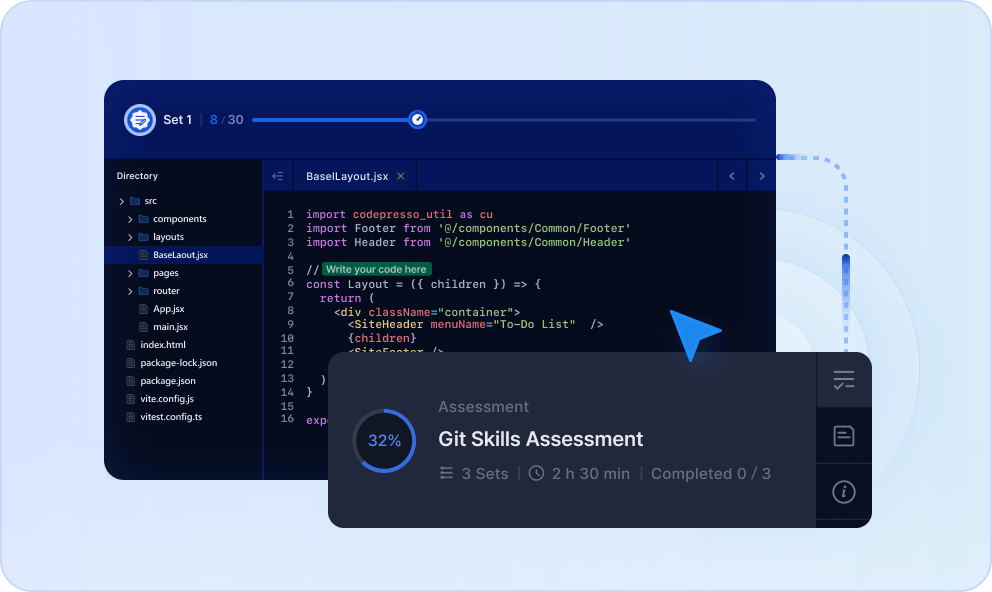
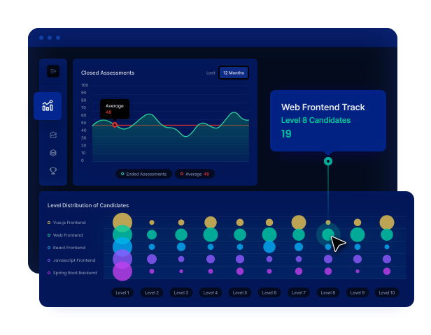

문제 정의
무엇을 맡길지
먼저 정합니다
업무 목표와 제약을 파악해 AI가 풀 수 있는 문제로 나눕니다.
Assess · AI 역량 진단
AI를 얼마나 아는지가 아니라,
업무에서 얼마나 잘 쓰는지 측정합니다
실제 업무 시나리오에서 문제를 정의하고 AI와 협업하고 결과를 검증하는 전 과정을 평가합니다.
직무별 현업 시나리오와 실제 데이터
AI 채점에 전문가 검증을 더합니다
개인·조직 리포트와 학습 우선순위
01 · What We Measure
AI를 업무 도구로 활용할 때 실제 성과를 가르는 네 가지 역량을 함께 평가합니다.
문제 정의
무엇을 맡길지
먼저 정합니다
업무 목표와 제약을 파악해 AI가 풀 수 있는 문제로 나눕니다.
프롬프트 설계
맥락과 기준을
함께 전달합니다
필요한 맥락과 기준을 주고 원하는 결과에 맞게 요청을 다듬습니다.
워크플로·Agent
한 번이 아니라
반복 가능하게 만듭니다
도구와 단계를 엮어 다시 쓸 수 있는 협업 흐름을 만듭니다.
결과 검증
그대로 쓰지 않고
확인해서 완성합니다
사실성과 품질, 우리 업무에 맞는지를 확인해 결과물을 완성합니다.
02 · Real-Work Assessment
참가자는 현업과 비슷한 자료와 목표를 받아 AI와 함께 결과물을 만듭니다. 입력한 문장이 아니라 일한 과정과 산출물을 봅니다.

03 · Assessment Tracks
전 구성원의 업무 활용 역량부터 개발 조직의 전문 기술 역량까지 필요한 범위로 구성합니다.
전 직군 업무 활용 AI와 함께 일하는 기본 역량
개발 직군 전문 역량 AI 개발과 Agent 구현 역량
04 · Common Standard
개인의 현재 수준과 조직 전체의 역량 분포를 공통 레벨로 확인할 수 있습니다.
Entry
AI의 역할과 한계를 알고 기본적인 도움을 받습니다.
Beginner
정해진 업무에서 프롬프트를 쓰고 결과를 활용합니다.
Intermediate
여러 단계와 도구를 연결해 반복 가능한 업무 흐름을 만듭니다.
Professional
복잡한 업무를 AI 중심으로 다시 짜고 조직 확산을 이끕니다.
05 · Enterprise Process
Purpose
채용, 교육 전후 측정, AX 전략 등 진단 목적을 정합니다.
Design
직군과 수준에 맞는 평가 트랙과 문항을 구성합니다.
Assess
참가자가 실제 업무 시나리오를 AI와 함께 수행합니다.
Score
AI 자동 채점과 전문가 검증으로 과정과 결과를 평가합니다.
Report
개인·조직 결과와 역량 격차에 맞는 학습 방향을 제공합니다.
06 · Actionable Report
개인은 강점과 보완할 역량을, 조직은 직군별 분포와 Skill Gap을 확인합니다.

07 · Use Cases
교육 전 진단
수준별 반 편성과 맞춤 교육 설계의 기준으로 사용합니다.
교육 후 성과 측정
동일한 기준으로 재진단해 실제 역량 변화를 확인합니다.
채용·선발
지원자가 AI와 협업해 문제를 해결하는 과정을 평가합니다.
AX 전략 수립
조직의 역량 분포를 바탕으로 우선 직군과 투자 영역을 정합니다.
08 · FAQ
3분 진단은 개인이 자신의 기본적인 AI 활용 습관을 빠르게 확인하는 맛보기입니다. 기업용 평가는 직무별 실무 미션을 수행하며 과정과 결과물을 여러 역량 차원에서 정밀하게 평가합니다.
아닙니다. 마케팅, HR, 경영관리, CS, R&D 등 비개발 직군의 AI 업무 활용 트랙과 개발 직군의 전문 기술 트랙을 함께 제공합니다.
개인은 4단계 수준과 세부 역량별 점수, 강점과 보완 영역을 확인합니다. 기업 담당자는 팀·직군·조직별 역량 분포와 Skill Gap을 대시보드와 리포트로 봅니다.
가능합니다. 같은 기준으로 사전·사후 진단을 진행해 변화를 비교하고 다음 교육 계획에 반영합니다.